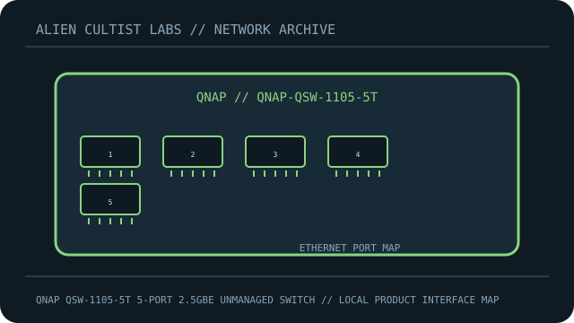

[ MODEL-SPECIFIC NETWORK HARDWARE ]
QNAP QSW-1105-5T 5-Port 2.5GbE Unmanaged Switch
Five 2.5GbE copper ports in a fanless, plug-and-play desktop switch. This record is limited to the exact named model; revisions and regional SKUs may differ.

MODEL IDENTIFICATION: Match the complete model number and revision on the manufacturer label before applying specifications. Published link rates are nominal, not measured application throughput.
Published specifications and compatibility
| Exact product | QNAP QSW-1105-5T 5-Port 2.5GbE Unmanaged Switch |
|---|---|
| Archive subcategory | Unmanaged switches |
| Physical ports | 5 × 2.5GBASE-T RJ-45 ports with auto-negotiation; no SFP slots and no PoE. |
| Host / chassis interface | Standalone unmanaged Ethernet switch; external DC power adapter. |
| Standards / protocol | IEEE 802.3bz 2.5GBASE-T with 1GbE backward negotiation; store-and-forward switching. |
| Rated link and switching rates | 2.5 Gb/s maximum negotiated rate per port; 25 Gb/s full-duplex switching capacity. Neither value is application throughput. |
| Power and thermal notes | External DC adapter; confirm voltage, polarity and current on the unit label before substituting a supply. Fanless desktop enclosure. |
| Firmware / driver | Unmanaged: no firmware management interface or host driver. |
| Compatibility guidance | Use standards-compliant Cat5e or better copper cabling and a 2.5GbE-capable peer for 2.5Gb/s links; a 1GbE peer falls back to 1Gb/s. Unmanaged operation offers no VLAN configuration or PoE. |
Model-specific deployment notes
A five-port desktop switch for extending a wired LAN. QNAP specifies 2.5GbE autonegotiation and a 25Gbps switching capacity; throughput depends on endpoints, cabling and traffic pattern.
For a reproducible speed or interoperability test, record both link-partner models, cable/media, firmware, negotiated rate and test method. No benchmark is claimed in this archival record.
Manufacturer sources and documentation
- QNAP — official QNAP QSW-1105-5T 5-Port 2.5GbE Unmanaged Switch product specificationsManufacturer product page/specification reference for this model.
- QNAP — official support, manual or compatibility resourcesUse revision- and region-specific documentation for firmware, installation, media and compatibility decisions.
Source specifications describe rated capability; verify the label and current manufacturer documentation before purchase or deployment.